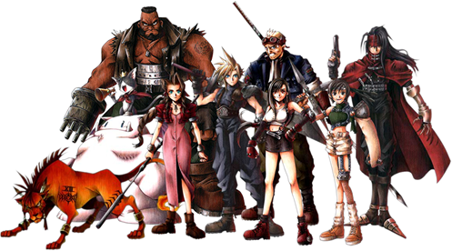

Jogos > RPG Saiba tudo sobre o Fintal Fantasy VII Atualizado em 06/Dezembro/2020 Sinopse Mundo O mundo de jogo é semelhante ao daquele de Final Fantasy VI, em que é muito mais avançado tecnologicamente do que nos cinco primeiros jogos da série. De forma geral, a tecnologia e a sociedade são semelhantes ao meio social de uma ficção científica industrial ou pós-industrial. O mundo de Final Fantasy VII é chamado dentro de jogo de simplesmente "o Planeta", porém foi retroativamente nomeado Gaia e é formado por três massas continentais principais. O continente do leste é onde fica a cidade de Midgar, uma metrópole industrial que serve como capital e abriga a sede da Shinra Electric Power Company, uma poderosa empresa de energia que chega a operar como o verdadeiro governo do mundo.[carece de fontes] Outros lugares no continente do leste incluem Junon, uma base militar da Shinra; Fort Kondor, uma fortificação que esconde um reator Mako; um rancho chocobo, onde diferentes tipos de animais podem ser criados; e Kalm, um vilarejo perto de Midgar. O continente do oeste possui o Gold Saucer, um grande parque de diversões com a Prisão Corel estando localizada bem abaixo; a Costa Del Sol, um resort à beira mar; Gongaga, um pequeno vilarejo que contém os restos de um reator Mako; Nibelheim, a cidade natal de Cloud e Tifa; e o Cosmo Canyon. As tribos que vivem nesta última estão em harmonia com a natureza e se dedicam ao bem estar de Gaia. Seu assentamento possui um observatório e serve como local de pesquisa para aqueles que desejam participar do "Estudo da Vida do Planeta", um estilo de vida que encoraja respeito pela natureza e ensina que o planeta possui uma energia própria. Em uma ilha perto do continente do oeste fica o vilarejo de Wutai. O continente mais ao norte é coberto por glaciais e tem alguns assentamentos como Bone Village, um local de escavação para um suposto tesouro enterrado; Icicle Inn, um resort de esqui; a mítica Cidade dos Antigos, localizada no meio de um vale. Personagens  Ilustração de Tetsuya Nomura dos nove personagens principais jogáveis. Esquerda para direita: Red XIII, Cait Sith, Barret Wallace, Aerith Gainsborough, Cloud Strife, Cid Highwind, Tifa Lockhart, Yuffie Kisaragi e Vincent Valentine. Final Fantasy VII possui nove personagens principais jogáveis: Cloud Strife, o protagonista e um mercenário antissocial que afirma ser um ex-membro da 1ª Classe da unidade SOLDIER da Shinra; Barret Wallace, o líder do grupo terrorista anti-Shinra chamado AVALANCHE; Tifa Lockhart, um artista marcial membro da AVALANCHE e amiga de infância de Cloud; Aerith Gainsborough, uma vendedora de flores que está sendo perseguida por uma unidade de operações especiais da Shinra desde sua infância; Red XIII, uma criatura semelhante a um leão que foi alvo de experimentos por parte dos cientistas da Shinra; Cait Sith, um gato robótico adivinho que anda montado em um boneco moogle animado; Cid Highwind, um piloto e mecânico que sonhava em ser o primeiro homem no espaço; Yuffie Kisaragi, uma jovem ninja e ladra habilidosa; e Vincent Valentine, um ex-membro da unidade Turks da Shinra que passou por experimentações trinta anos antes do início do jogo. Personagem antagonista não jogável: Sephiroth. O principal antagonista da história é Sephiroth, um antigo membro da SOLDIER que reaparece vários anos depois de sua suposta morte. Enredo O mercenário Cloud Strife ajuda o grupo ecoterrorista AVALANCHE a atacar um reator Mako na cidade de Midgar, controlada pela companhia Shinra. Barret Wallace, o líder da equipe, acredita que a energia Mako consumida pelos reatores é a força vital do planeta, o qual enfraquece por causa disso. Tifa Lockhart, uma amiga de infância de Cloud, também faz parte do grupo. Apesar da missão ser bem sucedida, a AVALANCHE é emboscada no ataque ao reator seguinte. Cloud acaba jogado nas favelas e é encontrado por Aerith Gainsborough, uma vendedora de flores. A unidade de operações especiais Turks da Shinra chega para capturar Aerith, mas Cloud a defende. Enquanto isso a Shinra descobre a localização do esconderijo da AVALANCHE no Setor 7, destruindo-o ao derrubar o setor em cima da favela e matando sua população. Os Turks capturam Aerith, que revela-se ser a última dos Cetra, uma antiga tribo muito conectada ao planeta. O Presidente Shinra e o Professor Hojo acreditam que ela é a chave para encontrar a chamada Terra Prometida, um lugar mítico de fertilidade que eles veem como uma fonte abundante de Mako. Barret, Cloud e Tifa se infiltram na Shinra para resgatar Aerith, no processo encontrando espécimes simplesmente marcados como "Jenova". O grupo consegue alcançar Aerith com a ajuda de Red XIII, porém acabam capturados durante a fuga e aprisionados dentro do edifício. Na manhã seguinte eles encontram suas celas abertas, os espécimes Jenova desaparecidos e a maioria do pessoal da Shinra mortos: o responsável parece ser Sephiroth, um lendário líder da SOLDIER que supostamente morreu décadas antes. O grupo foge de Midgar e recebem a companhia de Cait Sith, Yuffie Kisaragi, Vincent Valentine e Cid Highwind. Eles descobrem que Sephiroth planeja danificar o planeta e forçar a aparição da Corrente da Vida, feita de Mako puro, lançando a lendária "Matéria Negra" e usando o feitiço "Meteoro" a fim de causar um ferimento enorme, assim permitindo sua fusão com a energia e seu renascimento como um deus. O grupo consegue derrotar Sephiroth e adquirir a Matéria Negra. Aerith parte para derrotá-lo sozinha enquanto os outros se recuperam do confronto. A equipe a persegue até uma cidade Cetra, porém Sephiroth mata Aerith enquanto esta rezava. Cloud e os outros seguem para a Cratera do Norte, descobrindo na viagem que Jenova era uma criatura interestelar que caiu no planeta séculos antes que foi derrotada e enterrada pelos Cetra. Os restos de Jenova foram encontrados pelo Professor Gast, um pesquisador da Shinra. Ele erroneamente achou que a criatura era um Cetra, tentando cloná-lo com a ajuda de Hojo. Gast abandonou o projeto mas Hojo conseguiu usar o filho não nascido de uma assistente: Sephiroth. Este acabou encontrando os espécimes do experimento de Hojo em Nibelheim, descobrindo também sobre sua própria origem. Ele ficou insano por achar que si mesmo e Jenova eram Cetras e destruiu a cidade em um ato de vingança contra os humanos normais. Cloud e Tifa o confrontaram durante o massacre, com Sephiroth desaparecendo em seguida e sendo presumido como morto. O grupo encontra Sephiroth na Cratera do Norte e descobrem que ele é apenas um de vários clones Jenova criados por Hojo. Ele tem matado e absorvido os outros clones a fim de criar uma "reunião" das células da criatura. Cloud é manipulado pela força de Jenova a entregar a Matéria Negra para uma quimera de Sephiroth. O ato mostra que Cloud também é um clone, evidência que Sephiroth usa para exibir memórias do massacre de Nibelheim em que um outro membro da SOLDIER aparece em seu lugar. Sephiroth lança Meteoro e convoca os gigantes protetores do planeta, mas fazendo com que eles o ignorem como a principal ameaça. O terremoto que se segue separa Cloud do resto da equipe e ele cai na Corrente da Vida. O resto do grupo e os Turks que os seguiram escapam de dirigível, com todos da AVALANCHE sendo presos. Os gigantes protetores se voltam contra a humanidade enquanto Meteoro se aproxima do planeta. A Shinra volta seus esforços para salvar as pessoas e tenta destruir Meteoro diretamente, algo que custa a vida da maioria do pessoal da companhia. Tifa, Barret e os outros são sentenciados a morte, porém conseguem escapar. Eles encontram Cloud catatônico em um hospital de uma ilha, com Tifa decidindo ficar e ajudá-lo. Os gigantes atacam e destroem a ilha, jogando Cloud e Tifa de volta para a Corrente da Vida. Lá, ela o ajuda a reconstruir suas memórias e descobrir a verdade sobre o passado. Descobre-se que Cloud nunca entrou para a SOLDIER e que a pessoa nas visões de Sephiroth era na verdade Zack Fair, amigo de Cloud e o primeiro amor de Aerith. Os dois amigos estavam presentes no massacre de Nibelheim, com Cloud tendo conseguido ferir Sephiroth gravemente, que sobreviveu graças às células de Jenova. Zack e Cloud foram presos e usados por Hojo a fim de aprimorar seus experimentos. Os dois tentaram fugir, porém Zack acabou morto por soldados da Shinra. Cloud se recuperou, ficou com a espada do amigo e foi para Midgar; suas aspirações em se tornar um SOLDIER e a história de Zack se combinaram na sua cabeça através dos experimentos Jenova, criando uma falsa personalidade. Cloud e Tifa saem da Corrente da Vida e se reúnem com o resto do grupo, descobrindo que Aerith estava tentando em seus últimos momentos usar o feitiço "Sagrado" a fim de parar Meteoro. No final ela conseguiu conjurar o feitiço, porém Sephiroth estava desde então impedindo seu lançamento. A equipe primeiro decide cuidar dos ataques dos gigantes, ao mesmo tempo confrontando Hojo, que revela ser o pai biológico de Sephiroth e que estava desde então alimentando seu filho com energia Mako. O grupo então parte para um ataque final contra Sephiroth, que acaba derrotado por Cloud após uma série de lutas. A equipe escapa da cratera de onde Sagrado é lançado, porém Meteoro já está perto demais para ser impedido sozinho. A Corrente da Vida acaba erguendo-se do planeta e ajuda Sagrado a destruir Meteoro. Quinhentos anos depois, Red XIII junto com dois filhotes olha para as ruínas de Midgar coberta por vegetação, mostrando que o planeta se recuperou.